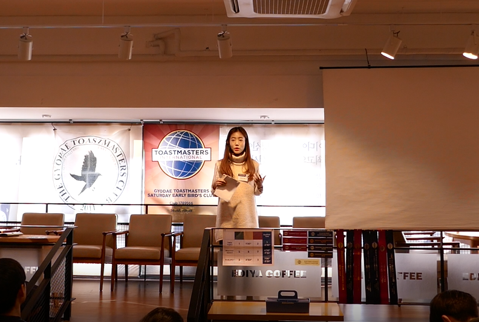

4th speech – Causes and effect Have you ever lied to your parents and teacher? And made extra lies to hide it more and eventually it became bigger like bigger snowball? What about after grow up? Are we all honest and sincere and crystal clear? What if we have some inconvenient truth that we never wanted to admit? Have you ever run from that truth? 